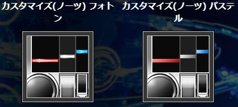
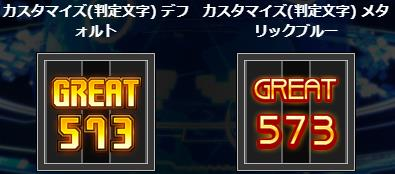
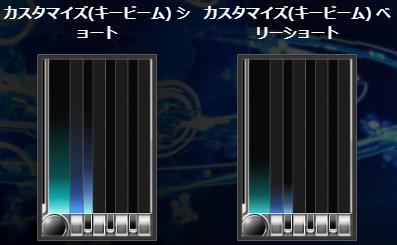

本文调查了 BPL 2022 职业选手们的自定义设置（音符/判定文字/按键光柱）。
※打击特效（ボム）种类繁多，且对音符辨识度的影响较小，因此略去不计。
BPL 2022 职业选手自定义设置一览
以下信息截至本文撰写时，均由笔者肉眼观察整理。如有错误，欢迎在评论区等地指正。
| NAME | 音符 | 判定文字 | 按键光柱 |
|---|---|---|---|
| UCCHIE | 光子 | 默认 | 短 |
| NIKE. | 光子 | 默认 | 短 |
| KENTAN | 粉彩 | 默认 | 超短 |
| 46 | 简洁纯色 | ABYSS | 超短 |
| CORIVE | 光子 | 默认 | 超短 |
| NCHO72 | 光子 | 数码管 | 超短 |
| CYBERX | 光子 | 默认 | 超短 |
| LOOT | 光子 | 金属蓝 | 超短 |
| MIKAMO | 光子 | 默认 | 短 |
| PEACE | 光子 | 默认 | 超短 |
| 54GAYA | 光子 | 默认 | 超短 |
| #MA3# | tricoro | 默认 | 超短 |
| SEIRYU | 粉彩 | 金属蓝 | 超短 |
| EXIT | 粉彩 | 默认 | 超短 |
| ANSA | 光子 | 数码管 | 超短 |
| KIDO. | 光子 | 默认 | 超短 |
| VELVET | 粉彩 | 默认 | 短 |
| WELLOW | 光子 | 金属蓝 | 超短 |
| 8S. | 光子 | 默认 | 超短 |
| FRIP | 粉彩 | 金属蓝 | 超短 |
| RIOO | 光子 | 默认 | 黑白 |
| PPJT | tricoro | 默认 | 超短 |
| TATSU | 光子 | 默认 | 黑白 |
| NORI | 亮色 | 金属蓝 | 超短 |
| U*TAKA | 光子 | 默认 | 超短 |
| KUREI | 细音符 | 默认 | 超短 |
| 16VV | tricoro | 默认 | 短 |
| MAKO-G | 亮色 | 默认 | 超短 |
| 1-PIN | 光子 | 默认 | 超短 |
| DINASO | 光子 | 默认 | 超短 |
| G* | 光子 | 默认 | 超短 |
| U76NER | 光子 | 默认 | 超短 |
统计信息与各自定义选项特点
音符（ノーツ）

- 光子（Photon）（20 名）
- 粉彩（Pastel）（5 名）
- tricoro（3 名）
- 亮色（Light）（2 名）
- 细音符、简洁纯色（各 1 名）
在音符皮肤中，光子的人气占压倒性优势。它的特点是色彩鲜明清晰，即使在偏暗的显示器上也很容易看清。
如果觉得光子太亮容易看累眼睛，建议改用粉彩。粉彩色调柔和，个人感觉也比光子更不容易产生残影。
tricoro 音符的特点是白键略带黄色。由于 IIDX 中白键的 CN（Charge Note，长按音符）本身也是黄色的，习惯了 tricoro 音符之后，说不定打长按谱面会更顺手？
默认音符则因为颜色略显偏暗而不受欢迎。尤其是升级到 Lightning Model（LM 框体）之后（或许是因为液晶屏幕升级后黑色表现得更纯粹深邃？），使用默认音符的玩家给人感觉明显变少了。
判定文字

- 默认（24 名）
- 金属蓝（5 名）
- 数码管（2 名）
- ABYSS（1 名）
判定文字中使用人数最多的是默认款式。虽然默认判定文字视觉存在感比较强，但我推测它受欢迎的原因之一在于棱角分明的字形更容易帮助自己构建假想判定线*。
原本以为用金属蓝的人会更多，没想到意外地少，挺让人惊讶的。金属蓝配色沉稳护眼，而且判定文字周围比默认款式更清爽干净，感觉在需要下移视线的低速段会更好打。
按键光柱（キービーム）

- 超短（Very Short）（25 名）
- 短（Short）（5 名）
- 黑白（Monochrome）（2 名）
超短光柱的使用率呈现压倒性优势。
特别是进入 Lightning Model 时代以后，把白数字总和（SUD+ 与 LIFT）调得偏大（300～500 左右）、并将视线固定在判定文字略上方的位置成了主流趋势，因此感觉觉得“连短光柱都挡视线”的玩家变多了。
超短光柱在适应之前确实有“不太容易确认自己到底按下去没”的缺点，但对于“按到是理所当然、能发光（P-GREAT）才算数”的职业级选手来说，这大概完全不是问题吧。
短光柱给人的印象主要是白数字偏小的选手在用。至于黑白光柱嘛……就不太清楚缘由了。
总结
光子最强！默认判定文字最强！超短光柱最强！
💬 读者评论与作者答疑（2 组对话）